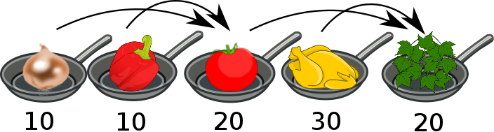

ビ太郎は料理を作るのが大好きです。ビ太郎の好きな料理はチャホビリです。

庭で料理をするときは，ガス台は1つしかありません。チャホビリを作るには，次の作業が必要です。
| 1 | 玉ねぎを調理する | 10 分 |
|---|---|---|
| 2 | ピーマンを調理する | 10 分 |
| 3 | 調理した玉ねぎとピーマンにトマトを加えて調理する | 20 分 |
| 4 | 鶏肉（とりにく）を調理する | 30 分 |
| 5 | ステップ3と4で調理したものをすべて混ぜてから，スパイスを加えて仕上げる | 20 分 |
ビ太郎は1台のガス代でチャホビリを作るのに90分かかりました。
ビ太郎は家で料理を作るときは複数のガス台を使えます。複数のガス台を使うと早く料理を作れます。
次の説明のうち，正しくないものはどれでしょう？
正解は「ガス台を4台使うと50分早く料理できる」